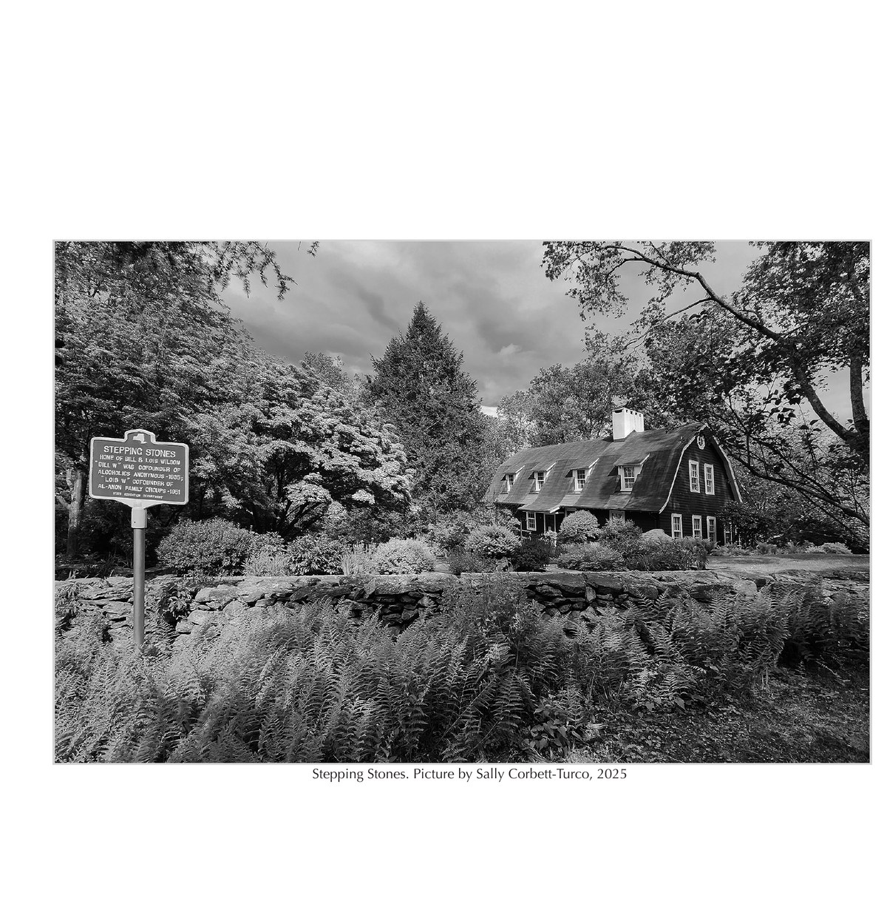
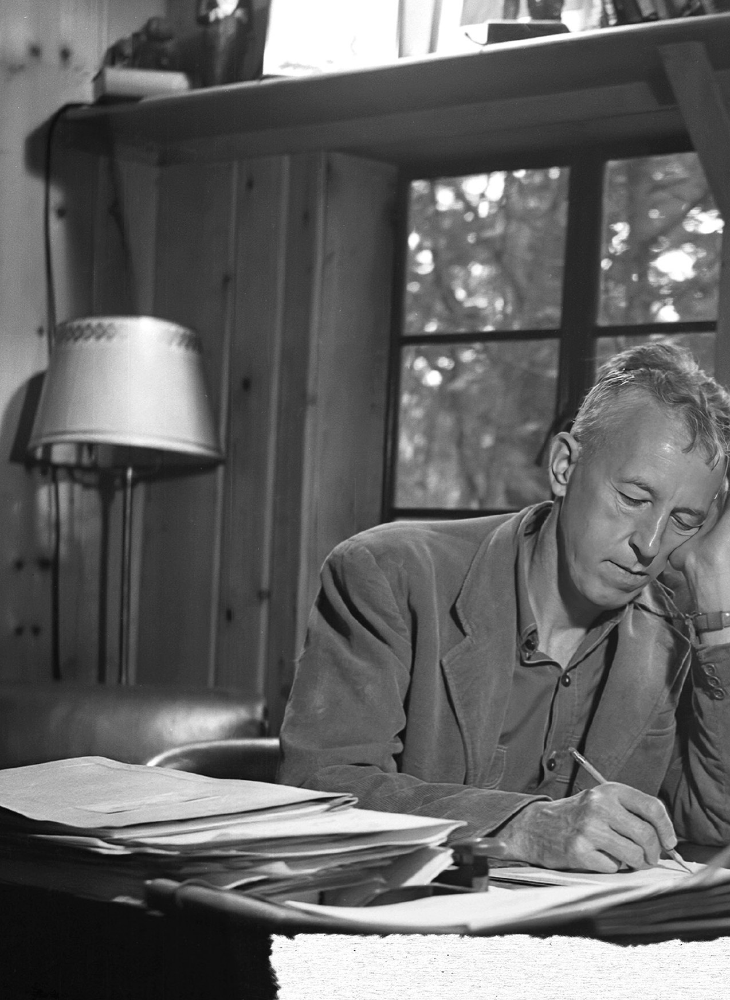

Historic Home of Bill & Lois Wilson
Stepping Stones — the longtime home and archive of Bill Wilson and Lois Wilson, respective cofounders of Alcoholics Anonymous and Al-Anon Family Groups — is preserved today thanks to loving care and the dedication of many friends.
Located in Westchester County, New York, it is where Bill and Lois lived, worked, and supported the worldwide growth of A.A. and Al-Anon from 1941 until Bill's passing in 1971 and Lois's in 1988.
The Stepping Stones Archive holds more than 110,000 items, including Lois' diaries, drafts of their speeches, and more than 5,100 letters by Bill. These manuscripts — along with 10,000 original artifacts — provide unparalleled insight into the history of Twelve-Step recovery and the Wilsons.

Stepping Stones. Picture by Sally Corbett-Turco, 2025

"We have seen a great deal of A.A. history in the making at Stepping Stones, and indeed the home witnessed some of the fellowship’s most significant developments."— Bill Wilson
The film Bill W. Conscious Contact — first a documentary and now a "film on paper" — came to life through a rare, close collaboration between Stepping Stones and the creative team.
Producer Jay Stinnett and Director Kevin Hanlon — longtime friends of the organization — deeply understand how Twelve-Step recovery has shaped society and saved lives over the past ninety years.
Explore the FilmBill at a picnic, Stepping Stones, 1955
Stepping Stones welcomes the public for tours of the National Historic Landmark. Explore the Online Archive Portal and virtual programs.
Visit steppingstones.org